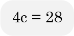

Olá, estudante do Sesc EAD EJA! Seja bem-vindo à área de Matemática. Confira agora o que você vai aprender neste módulo. Vamos explorar os temas consumo consciente e consumismo, aprendendo a identificá-los em diversas situações cotidianas. Estudaremos conceitos relacionados a grandezas e medidas encontradas no nosso dia a dia, além de estratégias de cálculo para relacioná-las. Você também terá acesso a informações e conhecimentos essenciais sobre a maximização e a minimização de lucros obtidos por meio de funções quadráticas. Prepare-se para uma jornada de aprendizado enriquecedora e prática! Siga conosco nesta caminhada! Até a próxima!
O consumo é uma característica da vida moderna. É uma prática diária ao comprarmos e consumirmos bens e serviços, como comida, roupas, eletrônicos, viagens, entre outros. Atualmente estamos constantemente expostos a mensagens nos incentivando a comprar mais e mais, seja por meio de publicidade, mídias sociais ou pressão social.
No entanto, o consumo pode assumir diferentes formas, por um lado, ser visto como uma maneira de satisfazer necessidades e desejos, elevando a qualidade de vida das pessoas. Por outro lado, levar ao consumismo, o ato de comprar em demasia, excessivamente. Uma forma de comportamento compulsivo, podendo trazer consequências negativas para o indivíduo, a sociedade e o meio ambiente. Agora vamos explorar esses dois lados do consumo, destacando as diferenças entre eles. Você sabe o que é consumo consciente e consumismo? Ouça os podcasts a seguir para saber mais sobre o assunto.
Consumo consciente
Consumismo
É a busca de produtos e serviços que atendam às nossas necessidades reais, de forma consciente, eficiente e sustentável, promovendo a economia de recursos naturais, a redução do desperdício e considerando as implicações éticas e sociais de nossas escolhas de consumo.
É o desejo incessante por mais bens e serviços, muitas vezes, alimentado pela publicidade e pelas pressões sociais podendo levar a uma série de problemas, como endividamento excessivo, estresse, insatisfação crônica e um impacto ambiental significativo devido ao descarte excessivo de produtos não essenciais.
É relevante refletir sobre a diferença entre consumo consciente e consumismo na sociedade atual. Enquanto o consumo consciente se baseia na análise das escolhas de compra, visando a uma abordagem equilibrada em relação aos recursos e necessidades, o consumismo, por outro lado, promove um consumo excessivo, frequentemente motivado por impulsos ou pressões sociais.
A transição do consumismo para o consumo consciente envolve as implicações financeiras e ambientais de nossas decisões de consumo. O consumo consciente entra em cena quando refletimos cuidadosamente sobre a necessidade de cada compra, evitando o desperdício e optando por produtos de qualidade, que tenham uma vida útil mais longa.
Você já parou para pensar em suas compras e gastos mensais? Lembra-se de que, nos módulos anteriores, estudamos sobre organização financeira?
Pois então, à medida que aumentamos a quantidade de itens adquiridos, nossos gastos também tendem a aumentar. Isso é um exemplo do que conhecemos como relação entre grandezas, em matemática.
Outra situação interessante é a relação entre tempo e velocidade em viagens. Quanto maior a velocidade, menor será o tempo necessário para chegar ao destino, e vice-versa. A escolha do meio de transporte também pode ser um exemplo de relação entre grandezas. Quanto mais utilizarmos o transporte público, menor será a poluição e menos veículos estarão nas ruas. Optar por transporte público ou compartilhado, em determinados casos, por exemplo, pode economizar tempo e reduzir gastos em combustível e manutenção do veículo.
Podemos observar que, em cada uma dessas situações, existe uma relação de dependência entre as grandezas. Mas você sabe o que é uma grandeza? Grandeza é tudo aquilo que pode ser contado e medido, como o tempo, a velocidade, o comprimento, o preço, a idade, a temperatura, entre outros. Grandezas proporcionais variam de forma que a relação entre elas seja constante, mesmo que as medidas ou observações tenham sido feitas em situações ou contextos distintos. As grandezas são classificadas em: diretamente proporcionais e inversamente proporcionais. Clique ou toque nos botões para conhecer melhor as grandezas diretamente e inversamente proporcionais.
São aquelas grandezas em que a variação de uma provoca a variação da outra em uma mesma razão. Se uma dobra, a outra dobra, se uma triplica, a outra triplica, se uma é dividida em duas partes iguais, a outra também é dividida pela metade, mantendo uma relação de proporção constante, ou seja, seguindo uma taxa de proporção aplicada a todas as grandezas igualmente.
Uma grandeza é inversamente proporcional quando operações inversas são utilizadas nas grandezas. Por exemplo, se dobramos uma das grandezas, temos que dividir a outra por dois, se triplicamos uma delas, devemos dividir a outra por três, e assim sucessivamente.
Agora que já estudamos sobre grandezas, vamos classificá-las corretamente.
Para isso, clique ou toque nos botões a seguir.
Quando treinamos para participar de uma prova de corrida, podemos melhorar nosso desempenho ajustando a velocidade para alcançar a linha de chegada no menor tempo possível. Se um jovem corre a uma velocidade de 20 m/s e leva 60 segundos para concluir determinado percurso, ele pode aumentar a velocidade para 40 m/s e levar 30 segundos no mesmo percurso. Nessa situação, em que as grandezas velocidade e tempo são inversamente proporcionais, o aumento de uma implica na diminuição da outra na mesma proporção.
Quando decidimos fazer uma viagem de férias, precisamos calcular quanto tempo vamos levar para chegar ao destino. Logo, quanto maior a distância em quilômetros da nossa casa até o destino, mais tempo levaremos no deslocamento. Nessa relação, podemos perceber que as grandezas distância e tempo são diretamente proporcionais, pois quanto maior a distância, maior o tempo para chegar ao destino.
Ao cozinhar seguindo uma receita, os ingredientes propostos são distribuídos para que o prato fique de um determinado tamanho. Caso desejarmos dobrar o tamanho, precisamos dobrar a quantidade de ingredientes, já para fazer a metade do tamanho da receita, precisamos dividir a quantidade de cada ingrediente por dois. Dessa forma, é possível observar que as grandezas quantidade de ingredientes e tamanho da receita são diretamente proporcionais.
Para construir uma casa, precisamos de um determinado número de trabalhadores. Uma equipe de 10 trabalhadores leva 30 dias para construir uma casa, logo, se aumentarmos o número de trabalhadores, podemos redistribuir as tarefas, e esses trabalhadores conseguirão terminar a casa em menos tempo. Ou seja, se 10 trabalhadores levam 30 dias, 20 trabalhadores levarão 15 dias. Logo, ao dobrarmos o número de trabalhadores, o tempo de produção cairá pela metade, ou seja, estamos falando de grandezas inversamente proporcionais, pois com o aumento do número de trabalhadores, a casa será entregue em um menor período de tempo.
Em uma linha de produção de uma fábrica, é enviado um pedido fechado de 500 peças por dia, que são distribuídas para 50 trabalhadores, dessa forma cada um terá que produzir 10 peças. Se aumentarmos o número de trabalhadores para 100, para atender a esse mesmo pedido, vemos que dobrará o número de funcionários, assim o número de peças produzidas por trabalhador será reduzido pela metade, ou seja, serão entregues cinco peças. Nesse exemplo, é possível perceber que as grandezas relacionadas são inversamente proporcionais, pois, dobrando o número de trabalhadores, eles terão que produzir a metade das peças estipuladas antes.
Como vimos, nosso cotidiano está repleto de situações que envolvem grandezas diretamente e inversamente proporcionais. Assista aos vídeos a seguir para resolver, de forma intuitiva, outras situações do dia a dia.
Maria e Joana estavam na aula de matemática, e a professora propôs a seguinte atividade para elas aplicarem habilidades que envolvem grandezas diretamente proporcionais. Elas teriam que ir a uma loja de tecidos e comparar a quantidade necessária de tecido para a confecção de diferentes quantidades de camisetas, são elas: quatro camisetas tamanho médio, oito camisetas tamanho médio, doze camisetas tamanho médio e dezesseis camisetas tamanho médio.
Assim, no turno inverso, as duas amigas, combinaram de ir ao Centro da cidade, na loja Fios e Tecidos, para realizar a atividade. Para melhor organizar os dados, elas construíram a seguinte tabela:
| Quantidade de camisetas tamanho médio | 1 | 4 | 8 | 12 | 16 |
| Quantidade de tecido necessário em centímetros | 90 cm | 360 cm | 720 cm | 1080 cm | 1440 cm |
A professora entregou às alunas uma folha de análise dos resultados para responderem às seguintes questões:
a) Quando foi quadruplicada a quantidade de camisetas, o que aconteceu com a quantidade de tecido?
Quadruplicou também.
b) É possível que a quantidade de camisetas seja diretamente proporcional a quantidade de tecido? Justifique.
Sim, pois, para quatro camisetas, precisamos de quatro vezes a quantidade de tecido, para oito camisetas, precisamos de oito vezes a quantidade de tecido, e assim por diante.
Na outra atividade, vimos um exemplo de relação de proporção direta entre as grandezas. Agora, vamos buscar uma nova relação.
A professora sabia que as duas alunas viajam para a praia todo fim de semana e que a casa delas fica na mesma cidade e na mesma rua. Então, pediu para que elas descrevessem uma simulação da viagem com velocidades diferentes, em que uma fosse com a velocidade máxima da via, que é 110 km/h, e a outra com a metade da velocidade, nesse caso, 55 km/h. Conforme experiências anteriores, na velocidade constante de 110 km/h, na simulação, chegariam ao destino em duas horas.
Para melhor organizar os dados, elas construíram a seguinte tabela:
| Velocidade | Tempo |
|---|---|
| 110 km/h | 2 horas |
| 55 km/h | 4 horas |
A professora entregou às alunas uma folha de análise dos resultados para responderem às seguintes questões:
Análise dos resultados
a) Quando reduziu a velocidade pela metade, o que aconteceu com o tempo? Dobrou, de duas horas passou para quatro horas a viagem.
b) É possível que a velocidade do carro seja inversamente proporcional à quantidade de horas percorrida? Justifique.
Sim, pois, quando a velocidade reduziu pela metade, a quantidade de tempo da viagem dobrou.
A professora ficou muito feliz com a dedicação das amigas na atividade e questionou sobre quais aprendizados elas teriam adquirido na realização da atividade proposta. No decorrer da atividade, elas puderam perceber e identificar alguns tipos de variáveis presentes no cotidiano e também a proporcionalidade presente na relação entre cada uma delas.
Os exemplos disponíveis neste módulo nos ajudam a compreender melhor as grandezas, suas classificações e proporcionalidades. É possível ter uma ideia das mais variadas grandezas que permeiam nosso dia a dia. Observamos, nos exemplos, que a proporcionalidade entre as duas grandezas estava clara, sendo possível percebê-las intuitivamente, mas, em determinados casos, pode ser necessária uma análise mais detalhada. Isso nos leva ao conceito matemático de regra de três, uma ferramenta matemática que nos ajuda a diferenciar relações proporcionais em situações menos evidentes, permitindo-nos fazer análises precisas e tomar decisões mais informadas. Faça as atividades propostas e depois conheça um pouco mais sobre regra de três.
1. (Adaptada de OBEF-2019) Analise as sentenças a seguir e marque a alternativa que contém a sequência correta de V (verdadeiro) ou F (falso).
I. O consumista é aquele que compra por compulsão, pelo simples prazer de comprar, levando em conta apenas o desejo, e não a necessidade.
II. O consumidor consciente é aquele que, ao escolher um produto, leva em consideração questões como preço, impacto ambiental e social e análise do seu próprio orçamento pessoal e/ou familiar.
III. O consumista tem um bom orçamento pessoal e/ou familiar, dificilmente tem problemas com dívidas acumuladas.
Resposta correta! Você analisou as características e entendeu as diferenças entre consumista e consumidor.
Resposta incorreta! Revise o conteúdo e verifique os conceitos de consumista e consumidor.
Resposta incorreta! Revise o conteúdo e verifique os conceitos de consumista e consumidor.
Resposta incorreta! Revise o conteúdo e verifique os conceitos de consumista e consumidor.
Gabarito: A.
2. Classifique as grandezas citadas nas situações a seguir como diretamente ou inversamente proporcionais.
Situação 1
O projeto de uma pequena reforma na casa de Maria foi originalmente estimado para ser concluído em seis dias, com o trabalho de uma equipe composta por quatro trabalhadores. No entanto, ao expandir a equipe para oito trabalhadores, Maria agora espera que a obra seja finalizada em metade do tempo, ou seja, em apenas três dias.
Resposta incorreta! Verifique que o número de dias reduz pela metade quando o número de trabalhadores dobra.
Resposta correta! Você verificou que a situação trata de grandezas inversamente proporcionais, pois o número de dias reduz pela metade quando o número de trabalhadores dobra.
Gabarito: B.
Situação 2
Em uma fábrica de bolos, os funcionários registraram que o tempo de cozimento de um único bolo é de 20 minutos. A cliente Ana fez uma encomenda de três bolos, e o atendente informou que o tempo total necessário para assar todos os bolos seria de 60 minutos.
Resposta correta! Você verificou que a situação trata de grandezas diretamente proporcionais, pois o número de bolos triplica quando o tempo também triplica.
Resposta incorreta! Verifique que o número de bolos triplica quando o tempo também triplica.
Gabarito: A.
Situação 3
Um reservatório é preenchido em um período de oito horas quando a taxa de enchimento é de cinco litros por minuto. Surpreendentemente, o mesmo reservatório pode ser preenchido em apenas quatro horas quando a taxa de enchimento é dobrada, atingindo 10 litros por minuto.
Resposta incorreta! Verifique que o tempo reduz pela metade quando a taxa de enchimento dobra por minuto.
Resposta correta! Você verificou que a situação trata de grandezas inversamente proporcionais, pois o tempo reduz pela metade quando a taxa de enchimento dobra por minuto.
Gabarito: B.
Situação 4
Você tomou a decisão de realizar uma viagem de carro e planeja percorrer 120 quilômetros a uma velocidade constante de 60 km/h ao longo de toda a jornada. Enquanto isso, sua amiga optou por fazer o mesmo trajeto, mas a uma velocidade constante mais elevada, de 120 km/h, cobrindo uma distância total de 240 km.
Resposta correta! Você verificou que a situação trata de grandezas diretamente proporcionais, pois os quilômetros percorridos dobram quando a velocidade também dobra.
Resposta incorreta! Verifique que o número de quilômetros percorridos dobra quando a velocidade também dobra.
Gabarito: A.
Situação 5
Em um depósito, há um estoque de ração para alimentar 400 frangos durante 30 dias. O proprietário resolveu comprar mais 400 animais e continuará dando a mesma quantidade de ração, logo, seu estoque durará 15 dias.
Resposta incorreta! Verifique que a ração dura a metade do número de dias quando a quantidade de frangos dobra.
Resposta correta! Você verificou que a situação trata de grandezas inversamente proporcionais, pois a ração dura a metade do número de dias quando a quantidade de frangos dobra.
Gabarito: B.
Situação 6
Uma das principais preocupações em relação ao nosso ecossistema está relacionada ao desmatamento abusivo. Sabe-se que, a cada três árvores derrubadas, é obrigatório plantar outras cinco árvores. Dessa forma, uma empresa que fez o corte de 30 árvores plantou outras 50 árvores para cumprir a legislação.
Resposta correta! Você verificou que a situação trata de grandezas diretamente proporcionais, pois o número de árvores plantadas aumenta quando aumenta a quantidade de árvores derrubadas.
Resposta incorreta! Verifique que a quantidade de árvores derrubadas aumenta quando o número de árvores plantadas também aumenta.
Gabarito: A.
3. Juliana foi ao mercado comprar ingredientes para fazer a receita de um bolo. Chegando lá, ela se deparou com vários itens, que estava precisando, em promoção. Então Juliana resolveu dobrar a receita e fazer um bolo maior. Ela percebeu que comprando os ingredientes para fazer a receita, conforme estava escrito em seu livro de receitas, ela gastaria R$ 68,00. Logo, com a decisão de dobrar a receita, ela precisará comprar todos os itens em dobro. Sabendo dessa informação, qual será o valor gasto por Juliana?
Resposta incorreta! Você reduziu o valor pela metade. Verifique o que acontece com o valor a pagar quando a receita é dobrada, sendo necessário dobrar a quantidade de ingredientes.
Resposta incorreta! Você multiplicou o valor por um e meio. Verifique o que acontece com o valor a pagar quando a receita é dobrada, sendo necessário dobrar a quantidade de ingredientes.
Resposta correta! Como dobrou a receita e a quantidade de ingredientes, o valor dos itens também dobra.
Resposta incorreta! Você triplicou o valor. Verifique o que acontece com o valor a pagar quando a receita é dobrada, sendo necessário dobrar a quantidade de ingredientes.
Gabarito: C.
4. Eunice precisa realizar o serviço de jardinagem em seu pátio e gostaria que esse serviço fosse feito em um prazo curto. Para isso, resolveu contratar uma empresa especializada. A empresa forneceu os seguintes dados: para realizar todos os reparos que Eunice necessitava disponibilizando 2 profissionais, eles levariam um total de 8 dias de trabalho. Como Eunice gostaria que o serviço fosse feito em um prazo menor, solicitou à empresa que disponibilizasse o dobro dos trabalhadores, ou seja, 4 profissionais. Diante dessas informações, quanto tempo esses 4 profissionais levariam para realizar o serviço solicitado por Eunice?
Resposta incorreta! Você reduziu o número de dias quatro vezes. Verifique o que acontece com o número de dias quando dobra o número de profissionais.
Resposta correta! Como é uma grandeza inversamente proporcional, o número de dias para a realização do serviço reduz pela metade quando dobra o número de profissionais.
Resposta incorreta! Você manteve o mesmo número de dias. Verifique o que acontece com o número de dias quando dobra o número de profissionais.
Resposta incorreta! Você dobrou o número de dias, entretanto, o número de profissionais também dobrou, logo, o tempo deve reduzir.
Gabarito: C.
Precisamos refletir diariamente sobre nossos hábitos de consumo: estamos contribuindo para uma sociedade mais solidária e sustentável? É importante, desde cedo, fazer escolhas responsáveis, de maneira a ampliar os impactos positivos de nosso consumo e diminuir os negativos.
Uma forma de contribuir para uma sociedade mais sustentável é pensar em estratégias para economizar energia. Uma solução muito simples e que pode ajudar é desligar a luz dos ambientes que não estão sendo ocupados.
Deixar a luz acesa durante uma saída rápida gasta menos luz? Tire dúvidas...
O que consome menos durante uma saída rápida da sala: deixar a luz acesa ou apagá-la e reacender quando voltar? A dúvida existe, pois o ato de acender uma lâmpada envolve um pico de energia e, em tese, é neste momento que elas consomem mais.
Apesar desse comportamento padrão, na maioria dos casos, a resposta será: deixe a luz apagada quando não estiver usando o ambiente.
Ter o hábito de apagar luzes ajuda a economizar na conta de luz e desgasta menos as lâmpadas. “Sempre compensa apagar. Por mais evolução tecnológica que um dispositivo tenha, desligá-lo significa aumentar a vida útil e diminuir o consumo. Isso vale até para uma lâmpada de LED. É um pouco perigoso fazer essa afirmação [que compensa deixar ligada]”, afirma Antonio Carlos Gianoto, professor do departamento de engenharia elétrica do Centro Universitário FEI.
Fonte: Trindade (2023)
Como podemos ver na reportagem, essa mudança de hábito resulta em economia de energia, o que se traduz em contas de eletricidade mais baixas e, consequentemente, menos gastos financeiros. Além disso, essa prática está alinhada com a sustentabilidade ambiental, pois reduz o consumo de energia elétrica e contribui para a diminuição das emissões de gases de efeito estufa.
Ao mesmo tempo, prolonga a vida útil das lâmpadas, reduzindo a produção de resíduos sólidos. Do ponto de vista da segurança, desligar as luzes quando não estão em uso ajuda a evitar riscos de incêndio. Portanto, é uma prática simples que combina benefícios financeiros, ambientais e de segurança. Agora, vamos juntos analisar um problema envolvendo o consumo de energia de lâmpadas em um contexto prático.
Em problemas como esses, podemos utilizar uma estratégia de cálculo conhecida como regra de três. Você lembra o que é a regra de três e como utilizá-la?
A regra de três é um método utilizado quando temos três valores conhecidos e um valor desconhecido, e as grandezas envolvidas têm uma relação de proporcionalidade.
Para aplicar o método de forma adequada, vamos acompanhar um passo a passo da resolução do experimento de Rosa. Para isso, clique ou toque no painel.
Faça a leitura do problema para identificar as grandezas envolvidas.
Crie uma tabela agrupando as grandezas de mesmo tipo na mesma coluna, mantendo os valores correspondentes entre si na mesma linha.
| Número de lâmpadas | Consumo de energia em kWh |
|---|---|
| 7 | 47,25 |
| 4 | Valor desconhecido, representado pela letra x |
Identifique se as grandezas envolvidas no problema são diretamente ou inversamente proporcionais. No experimento realizado por Rosa, espera-se que, com lâmpadas idênticas, ao diminuir a quantidade de lâmpadas, vamos diminuir também o consumo de energia de forma proporcional. Como as duas grandezas diminuem, elas são grandezas diretamente proporcionais.
Monte uma proporção.
No caso de grandezas diretamente proporcionais, faça uma multiplicação cruzada.
A imagem apresenta uma proporção indicada por sete dividido por quatro, igual a quarenta e sete, vírgula, vinte e cinco dividido por xis. Há duas setas de sentido duplo, uma partindo do sete e indo até o xis e outra partindo do quatro e indo até quarenta e sete, vírgula, vinte e cinco.
Sete multiplicando xis, igual a quatro, multiplicando quarenta e sete, vírgula, vinte e cinco.
Sete xis é igual a cento de oitenta e nove.
Resolvemos a equação de 1º grau.
Xis é igual a cento de oitenta e nove dividido por sete.
Xis é igual vinte e sete.
Portanto, Rosa observou que houve uma redução no consumo de energia elétrica, de 47,25 kWh para 27 kWh.
Conforme a resolução da regra de três, vimos que é necessário utilizar o conhecimento de equação de 1º grau.
Relembre! Equação de 1º grau
Equação é qualquer sentença matemática expressa por uma igualdade apresentando pelo menos uma incógnita. Em todas as equações, há o sinal de igual (=), ou seja, todas representam uma igualdade.
Nas equações, cada letra que representa um número desconhecido é chamada de incógnita. Ao resolver uma equação, encontramos o resultado chamado raiz. Logo, a raiz de uma equação é um número que, ao substituir a incógnita, torna a sentença verdadeira.
Exemplo:
Kelly foi ao shopping e comprou uma blusa por R$ 72,00 e quatro chocolates de valores iguais, gastando o total de R$ 100,00. Que valor Kelly pagou em cada chocolate?
Agora vamos representar essa situação por meio de uma equação do 1º grau.
72 é o valor da blusa + 4c representando o valor dos quatro chocolates, que totalizam 100 reais.
Para resolver a equação de primeiro grau, podemos seguir dois passos. Clique ou toque para visualizá-los.
Para deixar a primeira parte da equação com a incógnita isolada, podemos mudar o 72 para a segunda parte da equação, fazendo a operação inversa.
72 + 4 . c = 100
Setenta e dois mais quatro, multiplicando c, igual a cem.
4 . c = 100 – 72
Quatro multiplicando c, igual a cem, menos setenta e dois.
4c = 28
Quatro multiplicando c é igual a vinte e oito.
Isolar a incógnita c e aplicar a operação inversa da multiplicação, que é a divisão, para encontrar seu valor numérico.
c = 28 / 4
O c é igual a vinte e oito, dividido por quatro.
c = 7
O c é igual sete.
Logo, Kelly pagou sete reais cada chocolate.
Como podemos ver nesse caso, a redução do número de lâmpadas gera uma redução no consumo de energia, o que contribui para o consumo sustentável. Outra forma de contribuir para uma sociedade mais sustentável é adotar o uso do transporte público. Sabe-se que essa é uma questão desafiadora para muitas cidades brasileiras e é uma política pública que merece atenção, não só no que diz respeito à ampliação de oferta, como também pela qualidade do serviço oferecido.
[...] Em entrevista, o mestre em transportes e coordenador técnico do Mova-se, Fórum de Mobilidade, Miguel Pricinote, afirmou que o transporte público é um importante pilar para a sustentabilidade urbana. “Cidades que incorporam o transporte público como política pública ajudam a reduzir a emissão de carbono per capita, e o tempo de deslocamento, atendendo às necessidades de mobilidade e aumentando a acessibilidade”, explicou.
Além disso, Pricinote apontou algumas questões em relação à importância dos ônibus.
[...] Segundo o especialista, a redução da dependência do carro por conta da migração de pessoas do transporte individual para o ônibus, promove uma redução significativa de poluentes lançados na atmosfera dos ambientes urbanos.
Além disso, há a liberdade e mobilidade ampliada pelo transporte público. Sendo assim, a disponibilidade deles favorece a mobilidade individual para todos, dando a cada pessoa a liberdade de ir a praticamente qualquer lugar da cidade. “Neste ponto vale considerar que muitas pessoas não sabem dirigir, então o ônibus se mostra uma boa opção para elas”, destacou.
Por fim, o especialista ressaltou a melhora no orçamento familiar. “Com o aumento cada vez mais constante dos combustíveis, usar o transporte público pode gerar uma folga no orçamento familiar. Medida importante neste momento de crise econômica”, frisou. [...].
Fonte: GVBus (2022)
O transporte público desempenha um papel importante na promoção da sustentabilidade. Ao optar pelo transporte público, não economizamos apenas em despesas relacionadas a veículos particulares, como combustível, manutenção e estacionamento, mas também contribuímos para a redução das emissões de carbono, pois quanto mais pessoas utilizam o transporte público, menos carros individuais estão nas estradas e menos carbono é emitido. Observamos que estamos diante de grandezas inversas, pois uma grandeza aumenta à medida que a outra diminui. Vamos analisar um problema envolvendo a emissão de carbono e uma quantidade de ônibus do transporte público.
A administração municipal de uma cidade está promovendo o uso de transporte público como parte de seus esforços para reduzir as emissões de carbono. Em um bairro com apenas dois ônibus responsáveis pelo transporte público, as pessoas optavam por utilizar seus veículos pessoais, resultando em uma emissão média de carbono de 400 gramas por quilômetro (g/km) nas viagens individuais.
Por isso, a administração municipal adotou medidas para incentivar mais pessoas a utilizar o transporte público, aumentando a frota para cinco ônibus.
Considerando que a relação entre a emissão média de carbono e a oferta de ônibus é inversa, qual é a nova emissão média de carbono por quilômetro? Acompanhe o passo a passo da resolução desse problema clicando ou tocando no painel a seguir.
Faça a leitura do problema e identifique as grandezas envolvidas.
Crie uma tabela na qual as grandezas de mesmo tipo são agrupadas na mesma coluna, mantendo os valores correspondentes entre si na mesma linha.
| Quantidade de ônibus | Emissão média de carbono em gramas por quilômetro (g/km) |
|---|---|
| 2 | 400 |
| 5 | Valor desconhecido representado pela letra x |
Identifique se as grandezas envolvidas no problema são diretamente ou inversamente proporcionais.
Quanto mais ônibus disponíveis, mais pessoas utilizam o transporte público, menos carros individuais estão nas estradas e menos carbono é emitido. Como uma grandeza aumenta e a outra diminui na mesma proporção, estamos diante de grandezas inversamente proporcionais.
Monte uma proporção. Como as grandezas são inversas, precisamos inverter uma das colunas da tabela.
Dois dividido por cinco é igual a xis dividido por quatrocentos.
Depois de invertida uma das colunas, podemos realizar a multiplicação cruzada.
A imagem apresenta uma proporção indicada por dois dividido por cinco, que é igual a xis dividido por quatrocentos. Há duas setas de sentido duplo, uma partindo do dois e indo até o quatrocentos e outra partindo do cinco e indo até x.
Esse processo dará origem à seguinte equação:
Cinco multiplicando xis é igual a dois multiplicando quatrocentos.
Cinco xis é igual a oitocentos.
Xis é igual a oitocentos dividido por cinco.
Xis é igual a cento e sessenta.
Portanto, quando a oferta de ônibus aumenta para cinco, a nova emissão média de carbono por quilômetro é de 160 gramas por quilômetro. Isso representa uma redução significativa na emissão de carbono por viagem.
Se você deseja acompanhar mais exemplos de problemas resolvidos utilizando regra de três, assista aos vídeos a seguir.
Uma fábrica de calçados com sete funcionários produz 76 peças em um dia. Para produzir uma encomenda de 152 peças, quantos funcionários serão necessários?
Nesse problema, há duas grandezas envolvidas, que são: quantidade (peças produzidas) e número de funcionários. Organizando os dados em tabela, temos:
| Número de funcionários | Quantidade de peças |
|---|---|
| 7 | 76 |
| X | 152 |
Tabela com duas colunas e três linhas, na primeira coluna e primeira linha está escrito: número de funcionários. Na segunda coluna e primeira linha está escrito quantidade de peças. Na segunda linha da primeira coluna, há o número sete, na segunda coluna, o número setenta e seis. Na terceira linha da primeira coluna, há a letra xis, na terceira linha da segunda coluna, há o número cento e cinquenta e dois.
Analisando a organização dos dados, observamos que, ao aumentar o número de peças produzidas, precisaremos aumentar o número de funcionários, com isso, podemos perceber que esse problema tem grandezas diretamente proporcionais, pois quando uma aumenta, a outra também aumenta na mesma proporção.
E como resolver esse cálculo? Primeiramente vamos sinalizar no problema, por meio de flechas para a mesma direção, que podem apontar para cima ou para baixo, indicando que as duas grandezas crescem na mesma proporção.
| Número de funcionários | Quantidade de peças |
|---|---|
| 7 ↓ | 76 ↓ |
| X ↓ | 152 ↓ |
Tabela com duas colunas e três linhas. Na primeira coluna e primeira linha está escrito: número de funcionários. Na segunda coluna e primeira linha está escrito: quantidade de peças. Na segunda linha da primeira coluna, há o número sete com uma flecha indicando para baixo, na segunda coluna, há o número setenta e seis com uma flecha indicando para baixo. Na terceira linha da primeira coluna, há a letra xis com uma flecha indicando para baixo, na terceira linha da segunda coluna, há o número cento e cinquenta e dois com uma flecha indicando para baixo.
Depois da organização dos dados, escrevemos o problema em forma de proporção, com a igualdade entre as razões, e resolvemos a equação:
7/x = 76/152 → 7 está para x assim como 76 está para 152
Sete dividido por xis é igual a setenta e seis, dividido por cento e cinquenta e dois, seta para direita, resultando em sete.
Fazemos a multiplicação em x, multiplicando os meios e os extremos da equação:
76 . x = 7 . 152
Setenta e seis multiplicando xis é igual a sete multiplicando cento e cinquenta e dois.
x = 1064/76
Xis é igual a mil e sessenta e quatro dividido por setenta e seis.
x = 14 funcionários
Xis é igual a quatorze.
Uma empresa tem uma equipe com três funcionários para fazer a limpeza dos ônibus. Os funcionários levam seis dias para executar todo o serviço. Com a necessidade de que o serviço seja feito mais rapidamente, a empresa resolveu contratar mais três funcionários. Com esse aumento no número de funcionários, o número de dias para executar todo o serviço vai aumentar ou diminuir? O que você acha?
Como o serviço continua o mesmo, com as mesmas condições, quando aumentamos o número de funcionários, logicamente conseguiremos executar o serviço em um prazo menor, ou seja, menor número de dias. Sendo assim, nesse exemplo, temos grandezas inversamente proporcionais, pois se uma das grandezas aumenta, a outra diminui proporcionalmente.
| Funcionários | Dias |
|---|---|
| 3 | 6 |
| 6 | X |
Tabela com duas colunas e três linhas. Na primeira coluna e primeira linha está escrito funcionários e na segunda coluna e primeira linha está escrito dias. Na segunda linha da primeira coluna, há o número três, na segunda coluna, há o número seis. Na terceira linha da primeira coluna, seis, na terceira linha da segunda coluna, a letra xis.
Como já chegamos à conclusão de que as grandezas são inversamente proporcionais, vamos colocar as flechas em sentidos opostos, indicando essa proporcionalidade inversa.
| Funcionários | Dias |
|---|---|
| 3 ↓ | 6 ↑ |
| 6 ↓ | X ↑ |
Tabela com duas colunas e três linhas. Na primeira coluna e primeira linha está escrito funcionários, na segunda coluna e primeira linha está escrito dias. Na segunda linha da primeira coluna, há o número três com uma flecha indicando para baixo, na segunda coluna, o número seis com uma flecha indicando para baixo. Na terceira linha da primeira coluna, há o número seis com uma flecha indicando para cima, na terceira linha da segunda coluna, a letra xis com uma flecha indicando para cima.
Quando a empresa aumentou o número de funcionários, observamos que foi exatamente o dobro (2 . 3 = 6) (dois multiplicado por três igual seis), logo o tempo para realização do serviço será a metade: 6/2 = 3 (seis dividido por dois igual a três). Para colocar todas as grandezas no mesmo sentido, precisamos inverter uma das razões e então poderemos escrever a proporção:
3/6 = x/6
Três dividido por seis igual a xis dividido por seis.
6 . x = 6 . 3
seis multiplicando xis igual a seis multiplicando três.
x = 18/6
Xis igual a dezoito dividido por seis.
x = 3 dias
xis igual a três.
Para realizar o serviço, os seis funcionários vão precisar de três dias.
Ao estudarmos sobre a relação entre grandezas, vimos algumas maneiras de promover a sustentabilidade em nossa sociedade e resolvemos alguns problemas utilizando a regra de três.
Após praticar um pouco, por meio dos exercícios, vamos seguir a nossa jornada de aprendizado e nos aprofundar em outro tópico importante: o cálculo de custos e lucros em diferentes contextos financeiros.
1. (Adaptada de G1 - IFSUL 2017) Médicos recomendam o consumo moderado de refrigerante devido à quantidade elevada de açúcares presente nesse tipo de bebida. Observe os dados nutricionais de uma lata de refrigerante na tabela a seguir.
|
Informações nutricionais Porção de 350mL (2 copos) |
||
|---|---|---|
| Quantidade por porção | % Valor diário | |
| Valor energético | 149 kcal=624 kj | 7 |
| Açúcares | 37 g | 12 |
| Sódio | 18 mg | 1 |
Considerando os dados da tabela, qual é a quantidade aproximadamente de açúcares, em gramas, presente em 1000 mL desse refrigerante?
Resposta correta! Você encontrou a quantidade de açúcares na porção de 1000 mL.
Resposta incorreta! Essa quantidade de açúcares não corresponde à quantidade presente na porção de 1000mL de refrigerante. Monte uma tabela com as informações sobre as grandezas e utilize a regra de três para resolver o problema de grandezas diretamente proporcionais.
Resposta incorreta! Essa quantidade de açúcares não corresponde à quantidade presente na porção de 1000mL de refrigerante. Monte uma tabela com as informações sobre as grandezas e utilize a regra de três para resolver o problema de grandezas diretamente proporcionais.
Resposta incorreta! Essa quantidade de açúcares não corresponde à quantidade presente na porção de 1000mL de refrigerante. Monte uma tabela com as informações sobre as grandezas e utilize a regra de três para resolver o problema de grandezas diretamente proporcionais.
Gabarito: A.
2. No período de campanha eleitoral, uma gráfica recebeu um pedido em larga escala para produzir material de campanha. Inicialmente, estimou-se que as três máquinas disponíveis seriam capazes de concluir todo o serviço em um prazo de 48 horas. Entretanto, surgiu um contratempo inesperado: uma das máquinas apresentou defeito antes mesmo de começar a operar. Diante desse imprevisto, qual será o tempo necessário para atender a essa demanda, sabendo que não serão adquiridas novas máquinas?
Resposta incorreta! O tempo não será mantido o mesmo, pois haverá uma máquina a menos funcionando após o imprevisto. Monte uma tabela com as informações sobre as grandezas e utilize a regra de três para resolver esse problema de grandezas inversamente proporcionais.
Resposta incorreta! Esse tempo não será suficiente para realizar a produção do material. Monte uma tabela com as informações sobre as grandezas e utilize a regra de três para resolver esse problema de grandezas inversamente proporcionais.
Resposta correta! Você calculou o tempo necessário para produzir o material utilizando apenas duas máquinas.
Resposta incorreta! Esse tempo é maior do que o necessário para realizar a produção do material. Monte uma tabela com as informações sobre as grandezas e utilize a regra de três para resolver esse problema de grandezas inversamente proporcionais.
Gabarito: C.
3. (Adaptada de Enem 2012) Uma mãe recorreu à bula de um remédio para verificar a dosagem que precisava dar a seu filho. Na bula, recomendava-se a seguinte dosagem: cinco gotas para cada dois quilos de massa corporal, a cada oito horas. A mãe ministrou 30 gotas do remédio a seu filho, a cada oito horas. Qual é a massa corporal dele?
Resposta correta! Você calculou a massa corporal considerando a dosagem dada pela mãe e indicada pela bula.
Resposta incorreta! Monte uma tabela com as informações sobre as grandezas e utilize a regra de três para resolver esse problema de grandezas diretamente proporcionais e descobrir a massa corporal do filho.
Resposta incorreta! Monte uma tabela com as informações sobre as grandezas e utilize a regra de três para resolver esse problema de grandezas diretamente proporcionais e descobrir a massa corporal do filho.
Resposta incorreta! Monte uma tabela com as informações sobre as grandezas e utilize a regra de três para resolver esse problema de grandezas diretamente proporcionais e descobrir a massa corporal do filho.
Gabarito: A.
A matemática serve como ferramenta para as empresas de todos os tamanhos e setores, fornecendo as bases para a análise e a tomada de decisões financeiras sólidas e sustentáveis. Por meio de fórmulas, equações e modelos matemáticos, as empresas podem otimizar suas estratégias. É possível também prever cenários futuros, estimar os custos de produção, determinar os preços de venda ideais e identificar pontos de equilíbrio em que os lucros são maximizados e os custos são minimizados.
Sabemos que todo produto tem um determinado custo para ser produzido, seja ele variável ou fixo. Ao ser vendido, precisa gerar uma receita capaz de cobrir as despesas, custear a produção de novos produtos e movimentar o cotidiano da empresa. Dessa forma, o empresário deve estar atento ao faturamento e aos gastos da empresa. Para ver mais sobre alguns tipos de custo existentes, clique ou toque no painel a seguir.
Os custos fixos de produção são aqueles que não variam com a quantidade produzida. Isso significa que esses custos permanecem relativamente constantes, independentemente do nível de produção da empresa. Os custos fixos estão relacionados à infraestrutura da empresa, aos equipamentos, aos salários fixos de funcionários administrativos, ao aluguel de instalações, aos seguros e outros gastos que não mudam a curto prazo.
Fonte: Blog do PagBank (2022)
Os custos variáveis de produção são aqueles que variam diretamente com a quantidade produzida de bens ou serviços. Isso significa que, à medida que a produção aumenta ou diminui, os custos variáveis também se ajustam em conformidade. Esses custos estão relacionados às matérias-primas, à mão de obra direta e a outros insumos que são diretamente proporcionais à produção.
Fonte: Blog do PagBank (2022)
Esses conceitos se aplicam tanto a grandes empresas quanto a microempreendedores. As empresas precisam saber o valor de suas receitas e seus custos com o objetivo de estimar um valor de lucro. Para isso, é possível utilizar a função quadrática. Essa ferramenta matemática permite determinar o valor de lucro a partir da diferença entre as receitas e os custos de produção. Assista ao vídeo a seguir e veja um exemplo.
Suponha que uma confeiteira que trabalha em casa deseje determinar a quantidade ideal de bolos a serem produzidos e vendidos para maximizar seu lucro. Ela já tem informações sobre os custos de produção e o preço de venda de cada bolo.
A função de lucro L(x) (ele de xis) pode ser definida como a receita total menos o custo total:
L(x) = Receita(x) - Custo(x)
(ele de xis é igual a receita de xis menos custo de xis)
Para saber a receita da confeiteira, é necessário calcular o preço de venda multiplicado pela quantidade vendida. Assim, temos:
L(x) = (Preço de Venda . Quantidade Vendida) - Custo(x)
(ele de xis, sinal de igual, abre parênteses, preço de venda multiplicado pela quantidade vendida, fecha parênteses, menos custo de xis)
De acordo com o que foi apresentado anteriormente, fazemos a substituição dos valores na função.
L(x) = (18x) - (x² + 45)
(ele de xis, sinal de igual, abre parênteses, dezoito xis, fecha parênteses, menos, abre parênteses, xis ao quadrado mais quarenta e cinco, fecha parênteses)
Seguimos realizando a multiplicação do sinal negativo pelos termos que estão dentro dos parênteses.
L(x) = 18x - x² - 45
(ele de xis, sinal de igual, dezoito xis menos xis ao quadrado, menos quarenta e cinco)
A seguir, organizamos a função de acordo com o maior grau de expoente.
L(x) = - x² + 18x - 45
(ele de xis, sinal de igual, menos xis ao quadrado mais dezoito xis, menos quarenta e cinco)
Agora, temos uma função de lucro L(x) (ele de xis) em termos da quantidade de bolos produzidos x. Essa é uma função quadrática com a forma L(x) = - x² + 18x - 45 (ele de xis, sinal de igual, menos xis ao quadrado mais dezoito xis, menos quarenta e cinco).
Na função lucro formada anteriormente, é possível observar um cálculo que, se igualado a algum número, dá origem a uma equação do segundo grau. Você se lembra da equação de segundo grau e quais são seus termos?
Relembre! Equação de 2º grau
Vamos relembrar alguns detalhes de uma equação do segundo grau. A equação recebe esse nome por causa da incógnita (x) com maior grau, que está elevada ao quadrado. Toda equação de segundo grau pode ser escrita na forma ax² + bx + c = 0 (a, xis ao quadrado, mais bê, xis, mais cê, igual a zero), onde a, b e c são números reais chamados de coeficientes, e o coeficiente a tem que ser diferente de zero.
Ao resolver uma equação de segundo grau, determinamos os valores reais da incógnita, que torna a equação verdadeira. Esses valores são denominados raízes da equação. É possível ter até duas raízes. Para encontrarmos as raízes de uma equação de segundo grau, podemos usar a fórmula resolutiva:
Xis, sinal de igual, menos bê, mais ou menos raiz quadrada de bê ao quadrado, menos quatro, multiplicado por a, multiplicado por cê, divididos por dois, multiplicado por a.
Para resolver, primeiro identificamos os coeficientes a, b e c. O coeficiente a é o número que acompanha o x², o b é o número que acompanha o x e o c é o número que aparece sem o x. Após a identificação, substituímos os coeficientes pelos valores na fórmula resolutiva e resolvemos.
Para determinar a quantidade ideal de bolos a serem produzidos para maximizar o lucro, precisamos encontrar o ponto máximo da função quadrática L(x) (ele de xis).
Mas você sabe o que é o ponto máximo de uma função quadrática?
O ponto máximo de uma função quadrática é o ponto no gráfico da função onde a curva atinge o valor máximo. Nesse ponto, a curva da função quadrática se curva para baixo, formando um “U” invertido, e é o ponto mais alto da parábola (uma figura geométrica plana formada pelo conjunto de todos os pontos). O valor de y é o valor máximo da função.
Para encontrar esse ponto, é necessário calcular os vértices da função. Entenda o que são eles: os vértices de uma função quadrática são pontos importantes localizados no gráfico da função que representam o ponto mínimo ou máximo da parábola. Graficamente, o vértice é o ponto de virada da parábola, no qual a curva atinge seu ponto mais alto (para parábolas com concavidade para baixo) ou seu ponto mais baixo (para parábolas com concavidade para cima) na direção vertical.
A coordenada (x_vértice, y_vértice) representa o ponto onde a parábola atinge seu valor mínimo (se “a” for positivo) ou máximo (se “a” for negativo). Se “a” for positivo, a parábola se abrirá para cima e o vértice será o ponto mínimo.
A figura mostra duas retas que se cruzam no centro. A reta vertical é o eixo y e a reta horizontal é o eixo x. Do centro para a direita, sobre a linha do eixo x, está marcado, com um traço, o ponto mínimo x. Do centro para baixo, sobre a linha do eixo y, está marcado, com um traço, o ponto mínimo y. Esses pontos indicam as coordenadas do vértice. Sobre os eixos e o vértice, passa uma linha em formato de U, chamada de parábola, com a abertura voltada para cima.
Se “a” for negativo, a parábola se abrirá para baixo e o vértice será o ponto máximo.
A figura mostra duas retas que se cruzam no centro. A reta vertical é o eixo y e a reta horizontal é o eixo x. Do centro para a direita, sobre a linha do eixo x, está marcado, com um traço, o ponto máximo x. Do centro para cima, sobre a linha do eixo y, está marcado, com um traço, o ponto máximo y. Esses pontos indicam as coordenadas do vértice. Sobre os eixos e o vértice, passa uma linha em formato de U, chamada de parábola, com a abertura voltada para baixo.
Em seguida, vamos calcular o vértice de L(x) (ele de xis) em relação a “x”, utilizando a fórmula de x do vértice:
xv= (-b)/(2.a)
Xis, vê, igual, sinal de menos, bê, dividido por dois multiplicado por a.
Assista ao vídeo a seguir e descubra como resolver esse cálculo.
Vamos calcular o vértice de L(x) (ele de xis) em relação a “x”, utilizando a fórmula de x do vértice:
xv= (-b)/(2.a)
Xis, vê, igual, sinal de menos, bê dividido por dois multiplicado por a.
Na sequência, substituímos os coeficientes pelos valores da função.
xv= (-18)/(2.(-1) )
Xis, vê, igual, sinal de menos, dezoito dividido por dois multiplicado por, abre parênteses, um negativo, fecha parênteses.
Multiplicamos o número dois por menos um, resultando em dois negativos.
xv= (-18)/(-2)
Xis, vê, igual, sinal de menos, dezoito dividido por dois negativo.
Realizamos a divisão de menos dezoito por menos dois, resultando em nove.
xv=9
Xis, vê, igual a nove.
Este valor de x = 9 (x igual a nove) corresponde ao eixo de simetria da parábola, ou seja, divide a parábola em duas partes iguais.
Agora, vamos encontrar o ponto de máximo substituindo x = 9 (x igual a nove) na função L(x) = - x² + 18x - 45 (ele de xis, igual, sinal de menos, xis ao quadrado, mais dezoito xis, menos quarenta e cinco):
Substituímos o x por 9:
L(9) = - 1 . (9)² + 18 . (9) - 45
Ele de nove, igual, sinal negativo, um, multiplicado por nove ao quadrado, mais dezoito, multiplicado por nove, menos quarenta e cinco.
Em seguida, resolvemos a potenciação de nove ao quadrado, ou seja, nove vezes nove, igual a oitenta e um.
L(9) = - 1 . (81) + 162 - 45
Ele de nove, igual, sinal negativo, um, multiplicado por oitenta e um, mais cento e sessenta e dois, menos quarenta e cinco.
Realizamos a multiplicação de menos um por oitenta e um, resultando em menos oitenta e um.
L(9) = - 81 + 162 - 45
Ele de nove, igual, sinal negativo, oitenta e um, mais cento e sessenta e dois, menos quarenta e cinco.
Somamos os valores negativos e mantivemos o sinal de menos, ou seja, oitenta e um negativo mais quarenta e cinco negativo, resultando cento e vinte e seis negativo.
L(9) = 162 - 126
Ele de nove, igual, cento e sessenta e dois, menos cento e vinte e seis.
E finalizamos fazendo a subtração de cento e sessenta e dois por cento e vinte e seis, resultando em trinta e seis.
L(9) = 36
Ele de nove, igual, trinta e seis.
Portanto, a quantidade ideal de bolos a serem produzidos para maximizar o lucro é de nove bolos. Nesse caso, o lucro máximo é de R$ 36,00. Nesse cenário, a confeiteira obtém o maior lucro possível, considerando seus custos de produção e preço de venda.
Também é possível identificar uma quantidade máxima de produção por meio do gráfico da função, em um papel quadriculado ou um caderno, com o auxílio de uma régua. Pegue seus materiais e venha aprender a construir o gráfico de uma função de segundo grau manualmente no vídeo a seguir.
Sabemos que os microempreendedores, muitas vezes, enfrentam limitações de recursos e acesso a ferramentas avançadas, o que pode tornar desafiador para eles a realização de análises financeiras detalhadas. Portanto, a habilidade de fazer cálculos e análises financeiras manualmente é uma competência valiosa, especialmente nos contextos em que recursos tecnológicos avançados podem não estar disponíveis. Em contrapartida, as grandes empresas contam com o auxílio de software sofisticado, simplificando a análise de custos e lucros e permitindo a criação de gráficos detalhados e projeções precisas. Para saber mais, acompanhe o próximo exemplo no vídeo sobre a produção ideal de smartphones, com a análise de um gráfico utilizando o software Geogebra.
Suponha que uma fábrica de eletrônicos deseje determinar a quantidade ideal de smartphones a serem produzidos por minuto para minimizar seus custos de produção. Eles têm informações sobre os custos fixos e variáveis associados à produção de smartphones.
A função de custos totais C(x) (cê de xis) pode ser definida como a soma dos custos fixos e variáveis:
C(x) = Custos Fixos + Custos Variáveis
(cê de xis é igual a custos fixos, mais custos variáveis)
De acordo com o que foi apresentado anteriormente, fazemos a substituição dos valores na função.
C(x) = 5000 + (2x² - 100x)
(cê de xis é igual a cinco mil, sinal de mais, abre parênteses, dois multiplicado por xis ao quadrado, mais cem multiplicado por xis, fecha parênteses)
A seguir retiramos os parênteses e organizamos a função de acordo com o maior grau de expoente.
C(x) = 2x² - 100x + 5000
(cê de xis é igual a dois, multiplicado por xis ao quadrado, menos cem, multiplicado por xis, mais cinco mil)
Agora, temos uma função de custos totais C(x) (cê de xis) em termos da quantidade de smartphones produzidos x. Essa é uma função quadrática com a forma C(x) = 2x² - 100x + 5000 (cê de xis é igual a dois, multiplicado por xis, ao quadrado, menos cem, multiplicado por xis, mais cinco mil).
Para determinar a quantidade ideal de smartphones a serem produzidos para minimizar os custos, precisamos encontrar o ponto mínimo da função quadrática C(x).
Mas você sabe o que é o ponto mínimo de uma função quadrática?
O ponto mínimo de uma função quadrática é o ponto no gráfico da função onde a curva atinge o valor mínimo. Nesse ponto, a curva da função quadrática se curva para cima, formando um “U”, que é o ponto mais baixo da parábola. O valor de y é o valor mínimo da função.
A seguir, veja o cálculo do vértice de C(x) (cê de xis) em relação a x, utilizando a fórmula de x do vértice:
xv= (-b)/(2.a)
(xis, vê, igual, bê negativo, dividido por dois, multiplicado por a)
Assista ao vídeo para visualizar a resolução desse cálculo.
Vamos calcular o vértice de C(x) (cê de xis) em relação a “x”, utilizando a fórmula de x do vértice:
xv= (-b)/(2.a)
(xis, vê, igual a bê negativo, dividido por dois, multiplicado por a)
Na sequência substituímos os coeficientes pelos valores da função. Atenção às regras de sinais.
xv= (-(-100))/2.2
(xis, vê, igual, sinal de menos, abre parênteses, sinal de menos, cem, fecha parênteses, dividido por dois, multiplicado por dois)
Multiplicamos o número dois por dois, resultando em quatro.
xv= 100/4
(xis, vê, igual, cem dividido por quatro)
Realizamos a divisão de cem por quatro, resultando em vinte e cinco.
xv=25
(xis, vê, igual a vinte e cinco)
Este valor de x = 25 (xis igual a vinte e cinco) corresponde ao eixo de simetria da parábola, ou seja, divide a parábola em duas partes iguais.
Agora, encontramos o valor mínimo de custo substituindo x = 25 (xis igual a vinte e cinco) na função C(x) (cê de xis):
Substituímos o x por 25:
C(25) = 2.(25)² - 100 . (25) + 5000
(cê de vinte e cinco é igual a dois multiplicado por vinte e cinco, elevado ao quadrado, menos cem, multiplicado por vinte e cinco, mais cinco mil)
Em seguida, resolvemos a potenciação de vinte e cinco ao quadrado, ou seja, vinte e cinco vezes vinte e cinco, igual a seiscentos e vinte e cinco.
C(25) = 2 . (625) - 2500 + 5000
(cê de vinte e cinco, igual a dois, multiplicado por seiscentos e vinte e cinco, menos dois mil e quinhentos, mais cinco mil)
Realizamos a multiplicação de menos dois por seiscentos e vinte e cinco, resultando em mil e duzentos e cinquenta.
C(25) = 1250 - 2500 + 5000
(cê de vinte e cinco, igual a mil duzentos e cinquenta, menos dois mil e quinhentos, mais cinco mil)
Somamos os valores positivos, ou seja, mil duzentos e cinquenta mais cinco mil, resultando em seis mil duzentos e cinquenta.
C(25) = 6250 - 2500
(cê de vinte e cinco, igual a seis mil duzentos e cinquenta, menos dois mil e quinhentos)
Para finalizar, fazemos a subtração de seis mil duzentos e cinquenta menos dois mil e quinhentos, resultando em três mil setecentos e cinquenta.
C(25) = 3750
(cê de vinte e cinco, igual a três mil setecentos e cinquenta)
Portanto, a quantidade ideal de produção da fábrica é de 25 smartphones, resultando em um custo mínimo de R$ 3.750,00.
Também é possível identificar a quantidade mínima de produção por meio do gráfico da função utilizando o software Geogebra. Acompanhe o passo a passo no vídeo a seguir.
Nesse cenário, a fábrica de eletrônicos precisa produzir no mínimo 25 smartphones para minimizar seus custos de produção. Qualquer produção acima ou abaixo desse número resultaria em custos mais elevados. Essa análise ajuda a empresa a tomar decisões informadas sobre seu nível de produção para otimizar seus custos.
Vimos que o consumo é essencial na economia, impulsionando a produção, o emprego e o crescimento econômico. As empresas buscam entender os padrões de consumo de seus clientes para atender às demandas do mercado e maximizar seus lucros. Por outro lado, o consumismo vai além do consumo básico. Embora ele possa impulsionar as vendas e os lucros a curto prazo, também pode levar a custos elevados, como gastos com publicidade e produção excessiva.
Além disso, a conscientização crescente sobre questões ambientais e sociais está levando as empresas a repensarem suas práticas comerciais para garantir a sustentabilidade a longo prazo. Portanto, o equilíbrio entre consumo responsável, lucros e custos é um desafio importante para as empresas no cenário econômico atual. Com isso, finalizamos nosso conteúdo sobre educação financeira na prática e esperamos vocês na próxima etapa.
1. Um técnico em administração trabalha em uma empresa em que o faturamento e o custo dependem da quantidade x de peças produzidas. Sabendo disso, ele determinou uma expressão para o lucro da empresa, dada pela função L(x)= - x2 + 360x – 3200. O lucro máximo é obtido quando forem produzidas 180 peças. Com base nesses dados, qual é o lucro máximo que essa empresa pode atingir?
Resposta correta! Você substituiu o número de peças na função e calculou seu lucro.
Resposta incorreta! Você considerou o valor positivo do coeficiente c. O correto é substituir a incógnita pelo número de peças que atinge o lucro máximo.
Resposta incorreta! Ao calcular, você não elevou o primeiro valor ao quadrado.
Resposta incorreta! Ao calcular, você não considerou o sinal negativo na frente do x².
Gabarito: A.
2. Leia um trecho da reportagem da Agência Brasil.
Produção de máscaras cria alternativa para negócios: uso obrigatório de máscaras movimenta indústria e pequenas oficinas
A obrigatoriedade do uso de máscaras em diversas cidades brasileiras para evitar o contágio da covid-19 criou oportunidade para negócios, na extensa cadeia produtiva de fornecedores, que envolve desde grandes indústrias têxteis e confecções com marcas à venda no varejo até pequenas oficinas de costura que prestam serviço local para conserto de roupas [...].
Fonte: Costa (2020)
Pensando em driblar a crise, uma costureira investiu na produção de máscaras de tecido. Cada máscara tinha um custo de R$ 6,00. Em um dia de trabalho, ela produzia 40 unidades de máscaras. Se ela vender cada máscara por x reais, a quantidade vendida (q) será dada por q = 40 - x. Com base nessa análise, pode-se modelar a função de 2º grau (função lucro), que é descrita por L(x) = - x² + 46x - 240. Analisando o gráfico, qual será o lucro máximo dessa costureira?
Imagem de um gráfico em um fundo quadriculado. A reta horizontal representa o eixo x e a reta vertical representa o eixo y. O gráfico apresenta uma linha curva em formato de parábola com a concavidade voltada para baixo. O ponto máximo da parábola está localizado em duzentos e oitenta e nove.
Resposta incorreta! O gráfico não indica esse valor como lucro máximo. Lembre-se de que o lucro máximo é indicado pelo vértice.
Resposta correta! Você identificou o valor correspondente ao lucro máximo.
Resposta incorreta! O gráfico não indica esse valor como lucro máximo. Lembre-se de que o lucro máximo é indicado pelo vértice.
Resposta incorreta! O gráfico não indica esse valor como lucro máximo. Lembre-se de que o lucro máximo é indicado pelo vértice.
Gabarito: B.
3. Leia um trecho da reportagem de Você S/A:
Caneca da fortuna: empreendedor fatura R$ 5 milhões com franquia de brindes
Especializada em brindes personalizados, a Caricanecas se destacou em meio à pandemia e faturou R$ 5 milhões no primeiro semestre […].
Fonte: Lima (2021)
Pensando em driblar a crise, um profissional autônomo decidiu investir na produção de brindes e lembrancinhas personalizadas. Ele recebeu um pedido de canetas personalizadas. Cada caneta tinha um custo de R$ 2,00. Com base nesses dados, pode-se modelar a função de 2º grau (função lucro), que é descrita por L (x) = - x² + 12x - 20. Analisando o gráfico dessa função, qual é o lucro máximo que esse profissional obterá?
Imagem de um gráfico em um fundo quadriculado. A reta horizontal representa o eixo x e a reta vertical representa o eixo y. O gráfico apresenta uma linha curva em formato de parábola com a concavidade voltada para baixo. O ponto máximo da parábola está localizado em dezesseis.
Resposta incorreta! O gráfico não indica esse valor como lucro máximo. Lembre-se de que o lucro máximo é indicado pelo vértice.
Resposta incorreta! O gráfico não indica esse valor como lucro máximo. Lembre-se de que o lucro máximo é indicado pelo vértice.
Resposta incorreta! O gráfico não indica esse valor como lucro máximo. Lembre-se de que o lucro máximo é indicado pelo vértice.
Resposta correta! Você identificou o valor correspondente ao lucro máximo.
Gabarito: D.
10 DICAS para evitar compras por impulso e salvar seu planejamento. Racon Consórcios, 26 out. 2021. Disponível em: https://blog.racon.com.br/dicas-para-evitar-compras-por-impulso-e-salvar-seu-planejamento/#9-definir-um-or-amento-para-compras-diversas. Acesso em: 5 abr. 2022.
ASTH, Rafael C. Equação do Segundo Grau. Toda Matéria, c2011-2023. Disponível em: https://www.todamateria.com.br/equacao-do-segundo-grau/. Acesso em: 15 set. 2023.
COSTA, Gilberto. Produção de máscaras cria alternativa para negócios (...).Agência Brasil. Brasília, 4 maio 2020. Disponível em: https://agenciabrasil.ebc.com.br/economia/noticia/2020-05/producao-de-mascaras-cria-alternativa-para-negocios. Acesso em: 10 maio 2022.
GEOGEBRA. GeoGebra, [s.d]. Início. GeoGebra – Aplicativos matemáticos. Disponível em: https://www.geogebra.org/. Acesso em: 30 out. 2023.
GRANDCHAMP, Leonardo. Brasil é o 3° país que mais usa redes sociais no mundo todo! Rede Jornal Contábil, 1º out. 2021. Disponível em: https://www.jornalcontabil.com.br/brasil-e-o-3o-pais-que-mais-usa-redes-sociais-no-mundo-todo/#:~:text=O%20Brasil%20%C3%A9%20o%203%C2%BA,horas%20e%2045%20minutos%2C%20respectivamente. Acesso em: 5 abr. 2022.
KILHIAN, Kleber. Demonstração dos pontos de máximo e mínimo de uma função quadrática. O Baricentro da Mente, 26 dez. 2009. Disponível em: https://www.obaricentrodamente.com/2009/12/demonstracao-dos-pontos-de-maximo-e.html. Acesso em: 13 set. 2023.
LIMA, Monique. Caneca da fortuna: empreendedor fatura R$ 5 milhões com franquia de brindes (...).Você S/A, 8 jul. 2021. Disponível em: https://vocesa.abril.com.br/empreendedorismo/caneca-da-fortuna-empreendedor-fatura-r5-milhoes-com-franquia-de-brindes/. Acesso em: 10 maio 2022.
MATARAZZO, Claudia. Liquidação, promoção e sales – como fazer para não pagar mico. Claudia Matarazzo, 14 jan. 2015. Disponível em: https://www.claudiamatarazzo.com.br/visual-alem-da-moda/liquidacao-promocao-e-sales-como-fazer-para-nao-pagar-mico/. Acesso em: 30 out. 2023.
O TRANSPORTE coletivo como um importante pilar para a mobilidade urbana. GVBus. Vitória, 21 set. 2022. Disponível em: https://www.gvbus.org.br/o-transporte-coletivo-como-um-importante-pilar-para-a-mobilidade-urbana/#:~:text=Segundo%20o%20especialista%2C%20a%20redu%C3%A7%C3%A3o,mobilidade%20ampliada%20pelo%20transporte%20p%C3%BAblico. Acesso em: 14 set. 2023.
SANTOS, Vinicius. Função quadrática em matemática financeira. Blog Plataforma Enem, 29 set. 2020. Disponível em: https://blog.enem.com.br/funcao-quadratica-em-matematica-financeira/#:~:text=No%20decorrer%20dos%20c%C3%A1lculos%2C%20nota,fixo%20e%20o%20custo%20vari%C3%A1vel. Acesso em: 13 set. 2023.
SEMANA do Consumidor - Consumir com Consciência! Rizzo Imobiliária, 16 mar. 2023. Disponível em: https://rizzoimobiliaria.com.br/sinta-se-em-casa/dia-do-consumidor-consumir-com-consciencia. Acesso em: 30 out. 2023.
SILVA, Luiz Paulo Moreira. Grandezas diretamente e inversamente proporcionais. Escola Kids, c2023. Disponível em: https://escolakids.uol.com.br/matematica/grandezas-diretamente-inversamente-proporcionais.htm. Acesso em: 13 set. 2023.
SILVA, Luiz Paulo Moreira. Parábolas. Mundo Educação, c2023. Disponível em: https://mundoeducacao.uol.com.br/matematica/parabolas.htm#:~:text=Uma%20par%C3%A1bola%20%C3%A9%20uma%20figura,dos%20pontos%20da%20reta%20r. Acesso em 14 set. 2023.
SILVA, Luiz Paulo Moreira. Três passos para resolver uma equação do segundo grau. Mundo Educação, c2023. Disponível em: https://mundoeducacao.uol.com.br/matematica/tres-passos-para-resolver-uma-equacao-segundo-grau.htm. Acesso em: 14 set. 2023.
SILVA, Marcos Noé Pedro da. Ponto máximo e ponto mínimo de uma função do 2º grau. Brasil Escola, c2023. Disponível em: https://brasilescola.uol.com.br/matematica/maximo-minimo.htm. Acesso em: 13 set. 2023.
SUA EMPRESA tem que estar nas redes sociais? Comunicarte, 31 maio 2019. Disponível em: https://www.conteudoinboundmarketing.com.br/empresa-nas-redes-sociais/.Acesso em: 5 abr. 2022.
TANJI, Thiago. Escravos da moda: os bastidores nada bonitos da indústria fashion. Galileu, 23 jun. 2016. Disponível em: https://revistagalileu.globo.com/Revista/noticia/2016/06/escravos-da-moda-os-bastidores-nada-bonitos-da-industria-fashion.html. Acesso em: 5 abr. 2022.
TORRES, Paulo Magno da Costa. Equação de Primeiro Grau. Cola da Web, c2020-2023. Disponível em: https://www.coladaweb.com/matematica/equacao-1-grau. Acesso em: 13 set. 2023.
UNIVERSIDADE FEDERAL DA PARAÍBA. Educação financeira para toda vida. Olimpíadas de Educação Financeira. João Pessoa: UFPB, 2022. Disponível em: https://www.ufpb.br/educacaofinanceira/contents/documentos/obef/provas-e-gabaritos. Acesso em: 5 abr. 2022.
VOCÊ sabe a diferença entre custo fixo e variável? Aprenda! Blog do PagBank, 30 ago. 2022. Disponível em: https://blog.pagseguro.uol.com.br/diferenca-custo-fixo-e-variavel/. Acesso em: 11 set. 2023.
WERZBITZKI, João Bruno. Como os novos comportamentos de consumo influenciam nas redes sociais. E-Commerce Brasil, 12 jun. 2021. Disponível em: https://www.ecommercebrasil.com.br/artigos/como-os-novos-comportamentos-de-consumo-influenciam-nas-redes-sociais. Acesso em: 5 abr. 2022.